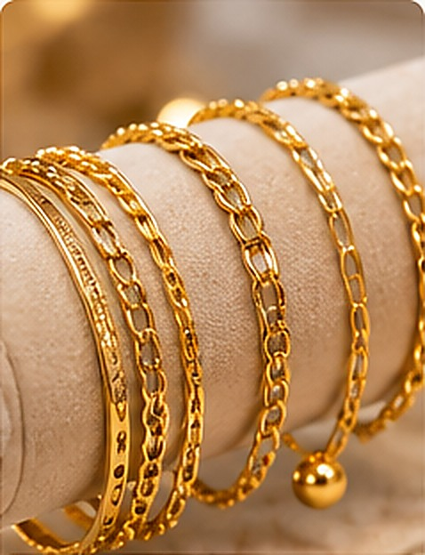
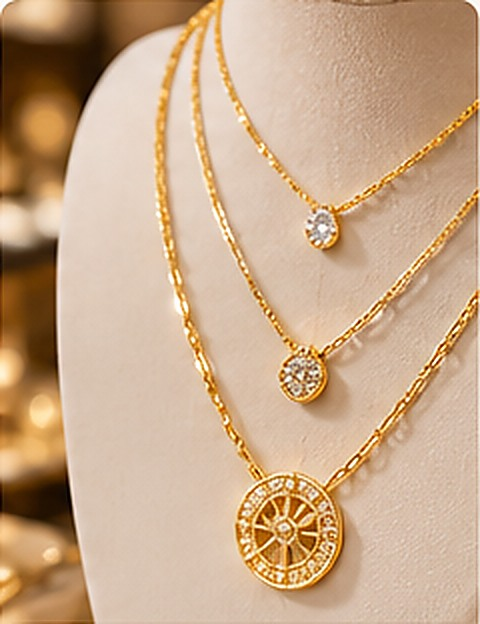
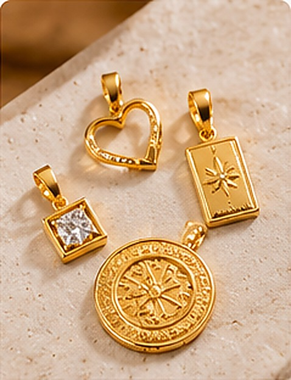
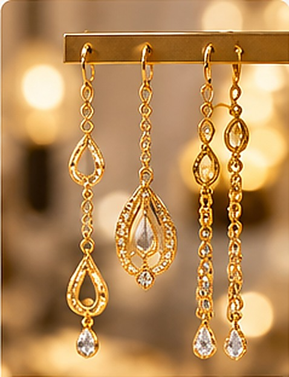
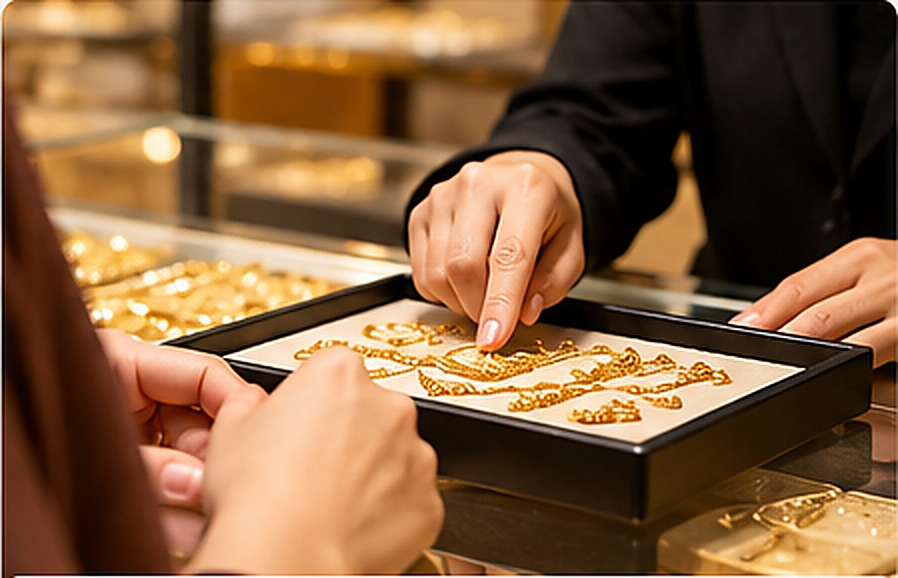

Toko Mas Berkah,
lebih dekat.
Di berbagai wilayah Jawa Barat, toko-toko kami hadir dengan nama lokal yang beragam. Kenali jaringan Berkah, lihat kategori produk dan layanan, serta dapatkan informasi cabang dalam satu tempat.
secara bertahap
Beragam nama toko,
satu jaringan Berkah.
Toko Mas Berkah menaungi jaringan toko emas yang hadir dengan nama lokal di sejumlah wilayah Jawa Barat. Setiap toko memiliki identitas dan lokasinya masing-masing, sementara website ini menjadi pintu masuk untuk mengenal jaringan, produk, serta layanan yang tersedia.
Kami ingin memudahkan pelanggan memperoleh informasi yang jelas—mulai dari mengenal Toko Mas Berkah, memahami kategori layanan, hingga menemukan cabang yang tepat untuk dihubungi.
Jelajahi jaringan cabang →Temukan toko
di sekitar Anda.
Jelajahi area toko dalam satu peta. Cari nama toko atau wilayah, lalu pilih cabang untuk melihat informasi alamat dan kontaknya.
Daftar toko
Coba kata kunci atau wilayah yang berbeda.
Catatan data awal: beberapa toko memakai alamat area/pasar yang sama pada dokumen sumber. Mohon verifikasi titik persis, alamat tiap unit, dan jam/hari operasional sebelum website dipublikasikan kepada pelanggan.
Koleksi pilihan,
untuk setiap momen.
Perhiasan emas, logam mulia, dan layanan untuk kebutuhan Anda.
Cincin

PERHIASANGelang

PERHIASANKalung

PERHIASANLiontin
Anting

PERHIASANGiwang
Antam, MiniGold,
dan lainnya.
Tanyakan ke cabang ↗Jual Beli Emas
Lihat cabang ↗
Konsultasi
Hubungi toko ↗Foto bersifat ilustrasi. Pilihan produk, merek, dan layanan dapat berbeda di setiap cabang; konfirmasikan langsung kepada toko.
Pertanyaan yang
sering diajukan.
Jam operasional toko pukul berapa?＋
Untuk versi awal website, jam operasional ditampilkan sementara pukul 07.00–17.00. Jam aktual setiap cabang perlu dikonfirmasi sebelum publikasi.
Apakah semua cabang menjual produk yang sama?＋
Belum tentu. Kategori pada website merangkum informasi awal jaringan; silakan hubungi cabang yang dituju untuk memastikan produk dan layanan tersedia.
Bagaimana cara menemukan cabang?＋
Gunakan kolom pencarian atau filter wilayah pada bagian Lokasi Toko. Pilih kartu cabang untuk melihat alamat dan tombol kontak atau membuka petunjuk arah di Google Maps.
Mengapa titik peta belum persis di lokasi toko?＋
Dokumen awal belum memuat koordinat GPS tiap toko. Titik pada prototipe menunjukkan perkiraan area/pasar dan perlu dikonfirmasi menggunakan lokasi akurat masing-masing cabang.
Hubungi cabang
yang Anda tuju.
Pilih toko di direktori untuk menghubungi kontak cabang yang tersedia.